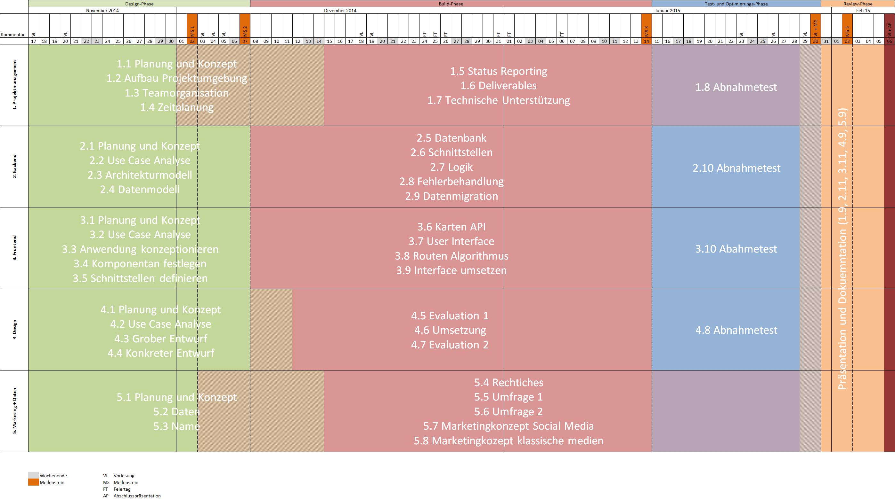
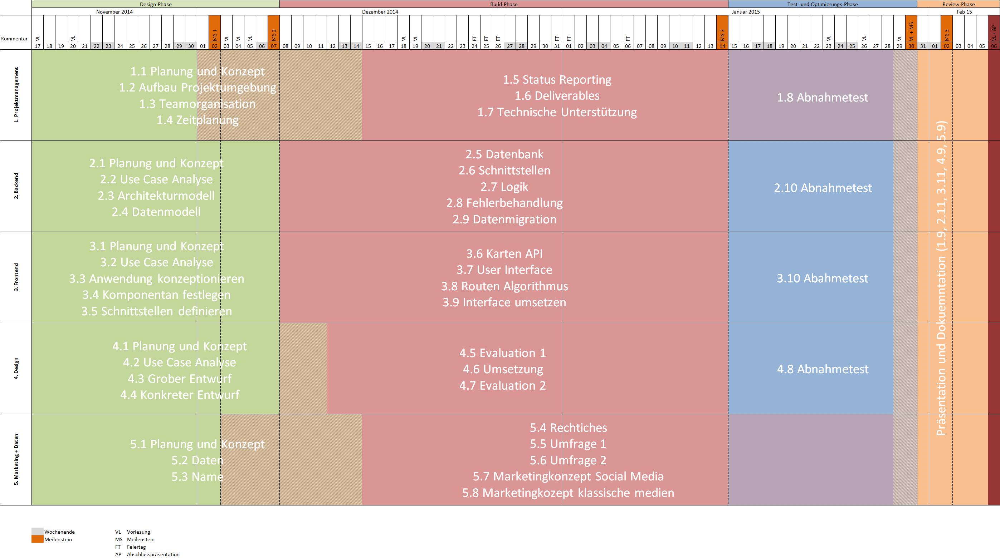
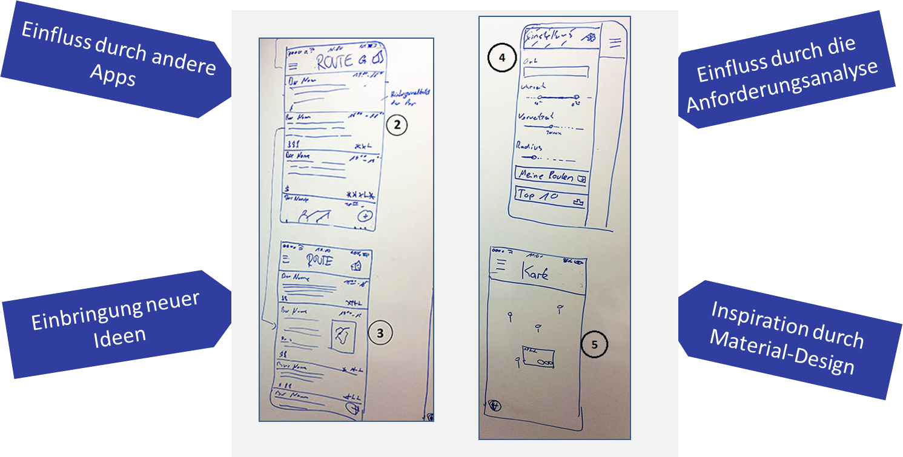
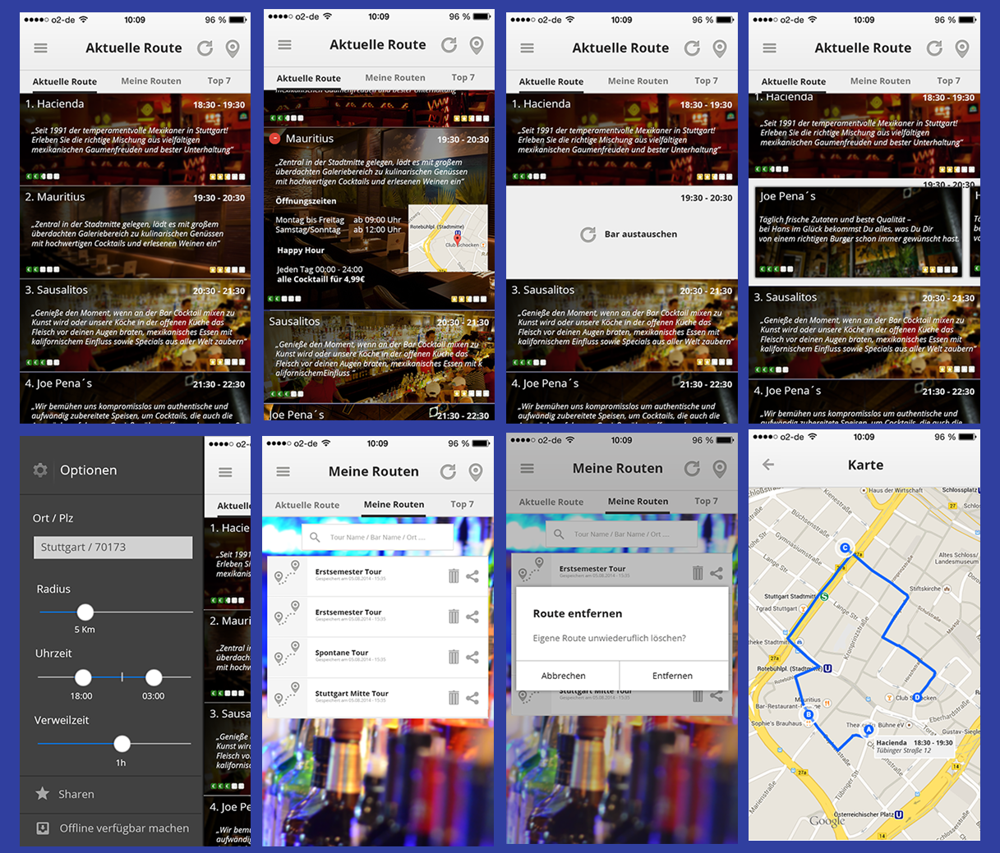
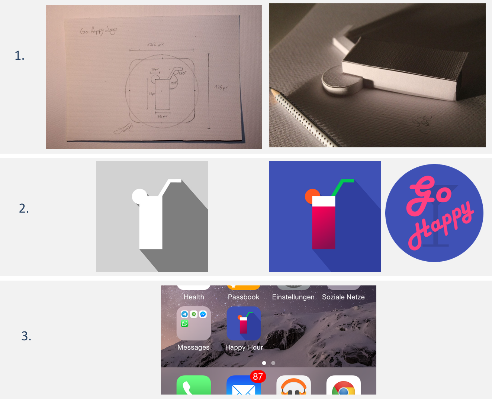
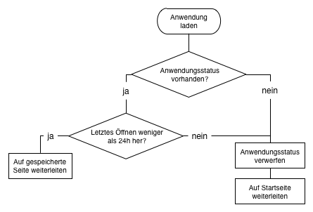

Ein Projekt des Kurses WWI2012F
5. Semester Duale Hochschule Baden-Württemberg Stuttgart
Abschlusspräsentation am 02.02.2015
Agenda
| Nr. | Inhalt | Vortragender |
|---|---|---|
| 1. | Einführung in das Projekt | Samuel Vogelmann |
| 2. | Vorstellung der Projektorganisation und Vorgehensweise | Samuel Vogelmann |
| 5. | Vorstellung des Teilprojektes Design | Simon Künnen |
| 3. | Vorstellung des Teilprojektes Backend | Maren Reuter |
| 4. | Vorstellung des Teilprojektes Frontend | Markus Thömmes |
| 6. | Vorstellung des Teilprojektes Marketing und Daten | Timo Bühler |
| 7. | Live Demo der Webanwendung "Go Happy" | Robert Schütte |
| 8. | Abschluss | Samuel Vogelmann |
Projektsturkturplan
Teamorganisation
Zeitplanung


Design
Vorgehensweise
Grobentwurf

Konkreter Entwurf
App Design

Konkreter Entwurf
Logo Design

Konkreter Entwurf
Design-Guideline
Umsetzung

Evaluation II
Anforderungen an das Backend
- Datenmodell
- Daten über vereinbarte Schnittstellen liefern
- Administrator Funktionen
- Wahl des externen Datenzulieferers

Ablaufschema des Backends

H2 Datenbank
In der Datenbank sind folgende Tabellen enthalten:
- barReport
- user
- happyHour
- route
Foursquare DAO
- Auswahl des Datenlieferers durch einen Vergleich
- Zugriff über Rest API
- Die Abfrage der Daten wird durch Suchparameter eingeschränkt
- Umkreis
Pfade
| Pfad | HTTP | Beschreibung | Verantwortlicher |
|---|---|---|---|
| /bars | GET | Alle Informationen zu den Bars im Umkreis auslesen | Tobias |
| /routes/{hash} | GET | Route eines bestimmten Hashwerts auslesen | Tabea |
| /toproutes | GET | Alle Top Routen auslesen | Maren |
| /routes | POST | Route in der Datenbank speichern | Michael |
| /bars/{id}/reports | POST | Fehler einer Bar melden | Jonas |
Administrator Pfade
| Pfad | HTTP | Beschreibung | Verantwortlicher |
|---|---|---|---|
| /bars/reports | GET | Gemeldete Bars anzeigen | Jonas |
| /bars/{barID}/report | DELETE | Alle Fehlermeldungen einer Bar löschen | Jonas |
| /report/{id} | DELETE | Bestimmte Fehlermeldung löschen | Tabea |
| /bar/{id}/hour | POST | Neue Happy Hour speichern | Marcus |
| /delHour/{hourId} | DELETE | Happy Hour löschen | Jonas |
Sequenzdiagramm des Backends

Foursquare Daten Cache
- Ziel: Erhöhung der Performance

Grundlegende Komponenten

Zusammenarbeit der Komponenten

Kommunikation der Views
- Kommunikation über lokale Persistenz
- View speichert Route im Anwendungsstatus
AppStatusPersistenceService.setRoute(route); - Weiterleitung auf neuen View
- Neuer View liest Route aus Anwendungsstatus aus
var route = AppStatusPersistenceService.getRoute();
Anwendungslebenszyklus
- Es gibt kein "Pausieren" der Anwendung
Lösung
- Speichern des Anwendungsstatuses
- Auslesen des Statuses bei jedem Laden der Anwendung

Routenalgorithmus
distance: Entfernung zur vorhergehenden Barrating: Foursquare Bewertung (0-10)happyHourOverlap: Prozentuale Überschneidung mit einer Happy-Hour
var barScore = (rating*100/distance) * (1+(happyHourOverlap*10));
Marketing
Quelle: http://www.professionalacademy.com/media/images/social-media-marketing-spout.jpg
Zielsetzung
Unterstützungsfunktion
- Datenbeschaffung für Inbetriebnahme
- Klärung rechtlicher Fragen
- Erarbeitung Marketingkonzept und Marketingstrategie
Methodik
Arbeitspakete
- Planung und Konzept
- Datenbeschaffung
- Name und Slogan
- Rechtliche Aspekte
- Erstellung, Konzeption und Durchführung Umfrage I
- Erstellung, Konzeption und Durchführung Umfrage II
- Social Media Marketingkonzept
- Klassische Medien Marketingkonzept
2. Datenbeschaffung
- Definition Format der Daten
- Datensammlung
- Datenpflege
- Bilderbeschaffung
3. Name und Slogan
OR DIE TRYIN'
4. Rechtliche Aspekte
- Impressum
- Datenschutz und Copyright
- Anzeigeanforderungen Bewertungsportal
5. Erstellung, Konzeption und Durchführung von Umfrage I
- Umfrage zur Durchführung einer Marktanalyse
- Impulse zur Erstellung der Web-Applikationen
- Ergebnisse bei den Marketingstrategien beachten
5. Erstellung, Konzeption und Durchführung von Umfrage I

6. Erstellung, Konzeption und Durchführung von Umfrage II
- Umfrage zur Überprüfung der bisherigen Zwischenergebnisse
- Design und Funktionen der Web-Applikation
- Feedback zu umgesetzten Funktionen und dem Design
6. Erstellung, Konzeption und Durchführung von Umfrage II

7. Social Media Marketingkonzept
- Ziele & Zielgruppe
- Multiplikation der Bekanntheit der Anwendung und Dialog mit den bestehenden Nutzern
- Frauen und Männer aus Stuttgart und der Umgebung, welche aktiv auf mindestens einem sozialen Netzwerk sind
- Plattformen & Aktionen
- Facebook & Twitter
- #GoHappy als Aggregator
- Kooperation mit Barbesitzern
- Animation der Nutzer zum Teilen von Erlebnissen
8. Klassische Medien Marketingkonzept
- Umfrageergebnisse dienen als Grundlage
- Produktpolitik
- Preispolitik
- Vertriebspolitik
- Kommunikationspolitik
- Über Umfragen
- klassische Mediawerbung:
- Werbung in Printmedien
- Radiowerbung
- Außenwerbung
- Werbeartikel
Layout Flyer/Plakat